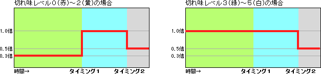

| 攻撃アクション | 威力 | 備考 | |
|---|---|---|---|
| 大剣 | 縦斬り | 48 | 剣を構えた状態から縦斬り |
| なぎ払い | 36 | ||
| 斬り上げ | 46 | ||
| 武器出し攻撃 | 48 | 移動中からの縦斬り | |
| 片手剣 | 前斬り | 14 | |
| 横斬り | 12 | 前斬りからの連携攻撃 | |
| 剣と盾のコンボ | 8・12 | 横斬りからの連携攻撃 | |
| 回転斬り | 24 | ||
| ジャンプ斬り | 18 | ||
| 斬り上げ | 15 | ジャンプ切りや前転後からの連携攻撃 | |
| ガード攻撃 | 14 | ガードしながら攻撃 | |
| 武器出し攻撃 | 18 | 移動中からの縦斬り | |
| 双剣 （通常時） |
斬り下ろし | 14 | |
| 回し斬り1 | 8・6 | 斬り下ろしからの連携攻撃 | |
| 回し斬り2 | 5・7・16 | 回し斬り1からの連携攻撃 | |
| 右回転斬り | 10・8・6 | ||
| 左回転斬り | 10・8・6 | ||
| 斬り払い | 12・6 | ||
| 斬り上げ | 15 | 斬り払いや前転後からの攻撃 | |
| 武器出し攻撃 | 12・6 | 移動中からの斬り下ろし | |
| 双剣 （鬼人化時） |
斬り下ろし | 18 | |
| 回し斬り1 | 10・8 | 斬り下ろしからの連携攻撃 | |
| 回し斬り2 | 6・9・21 | 回し斬り1からの連携攻撃 | |
| 右2回転斬り | 13・10・8・13・10・8 | ||
| 左2回転斬り | 13・10・8・13・10・8 | ||
| 斬り上げ | 20 | 前転後からの攻撃 | |
| 乱舞斬り | 28・5・5・5・5・5・5・5・5・33 | ||
| ハンマー | 縦振り1 | 52 | |
| 縦振り2 | 20 | 縦振り1からの連携攻撃 | |
| 振り上げ | 100 | 縦振り2や回転攻撃からの連携攻撃 | |
| 横振り | 15 | ||
| 回転攻撃 | 20・10・10・10・10・10・40 | （途中から回転数によってタメ（中）または 振り上げに派生） |
|
| タメ（小）攻撃 | 45 | タメ時間（小）の攻撃 | |
| タメ（中）攻撃 | 45・35 | タメ時間（中）の攻撃 | |
| タメ（大）攻撃 | 20・76 | タメ時間（大）の攻撃 | |
| 武器出し攻撃 | 20 | ||
| ランス | 中段突き | 23・23・30 | 連続３回まで |
| 上段突き | 28・28・30 | 連続３回まで | |
| 突進 | 20 | ||
| フィニッシュ突き | 40 | 突進後のフィニッシュ突き | |
| ガード攻撃 | 20 | ガードしながら攻撃 | |
| 武器出し攻撃 | 28 | ||
